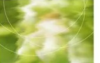

Bloop is a brand built on the balance between freedom, structure, and modern curiosity. Our identity draws inspiration from organic forms, soft asymmetries, and everyday moments. We make space for playful thinking, fresh perspectives, and the kind of ideas that grow a little differently.

the beginning
Good things don’t always follow a straight line. Sometimes, they start with a little wonder.